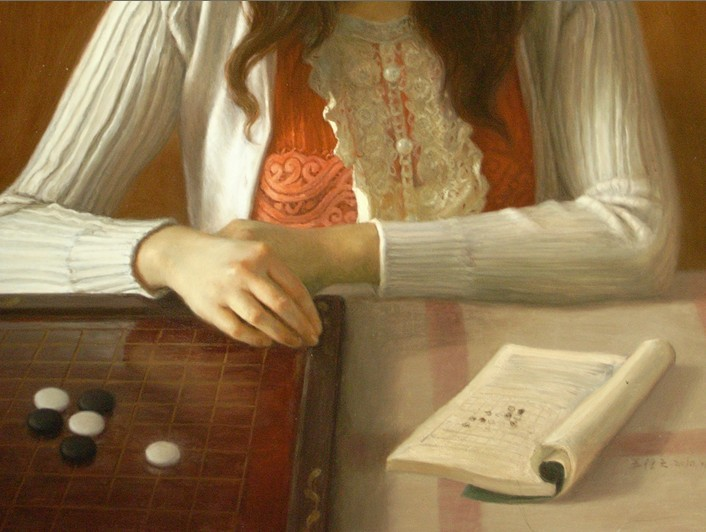

一幅关于五子棋的油画，看看是啥开局
首页
聚贤天下
#1 一幅关于五子棋的油画，看看是啥开局 作者：黑白之巅 发表时间：2011-12-1 14:28:36
RT：
 ［ aabb 于 2011-12-1 23:13:04 时花20金币送鲜花一朵］
#2 Re:一幅关于五子棋的油画，看看是啥开局 作者：黑白之巅 发表时间：2011-12-1 14:29:52
寒星？还是边角开局？
#3 Re:一幅关于五子棋的油画，看看是啥开局 作者：蛋老师 发表时间：2011-12-1 16:47:37
这妹子挺好
#4 Re:一幅关于五子棋的油画，看看是啥开局 作者：离子阵阵雨 发表时间：2011-12-1 16:50:50
少年，你确定这是五子棋？
#5 Re:一幅关于五子棋的油画，看看是啥开局 作者：一期一会 发表时间：2011-12-1 18:14:36
 我想看MM的头。。。。。
我想看MM的头。。。。。 ［ 黑白之巅 于 2011-12-2 12:16:52 时花20金币送鲜花一朵］
#6 Re:一幅关于五子棋的油画，看看是啥开局 作者：傀儡 发表时间：2011-12-1 20:36:10
我也很好奇，求全图~~~~~~ ［ 黑白之巅 于 2011-12-2 12:17:31 时花20金币送鲜花一朵］
#7 Re:一幅关于五子棋的油画，看看是啥开局 作者：老黄 发表时间：2011-12-1 20:51:04
确定这是MM？ ［ 黑白之巅 于 2011-12-2 12:17:41 时花20金币送鲜花一朵］
#8 Re:一幅关于五子棋的油画，看看是啥开局 作者：岳麓小棋后 发表时间：2011-12-1 22:08:52
确定这是油画??
［ 黑白之巅 于 2011-12-2 12:18:12 时花20金币送鲜花一朵］
#9 Re:一幅关于五子棋的油画，看看是啥开局 作者：流天类星 发表时间：2011-12-1 23:07:54
少年，这明显是围棋。。。 ［ 黑白之巅 于 2011-12-2 12:18:37 时花20金币送鲜花一朵］
#10 Re:一幅关于五子棋的油画，看看是啥开局 作者：aabb 发表时间：2011-12-1 23:12:02
还以为是照片画得不错啊
［ 黑白之巅 于 2011-12-2 12:20:40 时花20金币送鲜花一朵］
#11 Re:一幅关于五子棋的油画，看看是啥开局 作者：炫飞☆冲四不挡 发表时间：2011-12-2 0:07:03
高手啊，画的和真的一样 ［ 黑白之巅 于 2011-12-2 12:21:06 时花20金币送鲜花一朵］
#12 Re:一幅关于五子棋的油画，看看是啥开局 作者：雪儿飘飘 发表时间：2011-12-2 12:12:38
怎么看也不像油画啊！真的像是拍照片 ［ 黑白之巅 于 2011-12-2 12:21:16 时花20金币送鲜花一朵］
#13 Re:Re:一幅关于五子棋的油画，看看是啥开局 作者：黑白之巅 发表时间：2011-12-2 12:16:37
引用：
原文由 离子阵阵雨 发表于 2011-12-1 16:50:50 :
少年，你确定这是五子棋？
应该是吧，在挖那本书是哪本五子棋书，绿皮的不多。。。
#14 Re:Re:一幅关于五子棋的油画，看看是啥开局 作者：黑白之巅 发表时间：2011-12-2 12:17:12
引用：
原文由 一期一会 发表于 2011-12-1 18:14:36 :
我想看MM的头。。。。。［ 黑白之巅 于 2011-12-2 12:16:52 时花20金币送鲜花一朵］
看棋，看棋
#15 Re:Re:一幅关于五子棋的油画，看看是啥开局 作者：黑白之巅 发表时间：2011-12-2 12:17:55
引用：
原文由 老黄 发表于 2011-12-1 20:51:04 :
确定这是MM？［ 黑白之巅 于 2011-12-2 12:17:41 时花20金币送鲜花一朵］
是
#16 Re:Re:一幅关于五子棋的油画，看看是啥开局 作者：黑白之巅 发表时间：2011-12-2 12:18:26
引用：
原文由 岳麓小棋后 发表于 2011-12-1 22:08:52 :
确定这是油画??
［ 黑白之巅 于 2011-12-2 12:18:12 时花20金币送鲜花一朵］
是
#17 Re:Re:一幅关于五子棋的油画，看看是啥开局 作者：黑白之巅 发表时间：2011-12-2 12:20:27
引用：
原文由 流天类星 发表于 2011-12-1 23:07:54 :
少年，这明显是围棋。。。［ 黑白之巅 于 2011-12-2 12:18:37 时花20金币送鲜花一朵］
对围棋不懂，貌似围棋开局都是小目啊，占山头啊之类。。。这种在右上挤到一起，这么早就开始遭遇战的不多吧。。。不过还是求懂围棋的说下
#18 Re:Re:一幅关于五子棋的油画，看看是啥开局 作者：黑白之巅 发表时间：2011-12-2 12:21:53
引用：
原文由 雪儿飘飘 发表于 2011-12-2 12:12:38 :
怎么看也不像油画啊！真的像是拍照片［ 黑白之巅 于 2011-12-2 12:21:16 时花20金币送鲜花一朵］
是油画
#19 Re:一幅关于五子棋的油画，看看是啥开局 作者：小小亦默 发表时间：2011-12-4 17:08:04
应该是个美女 即使不是美女 也是个优雅的女子
#20 Re:一幅关于五子棋的油画，看看是啥开局 作者：真树 发表时间：2011-12-4 21:29:08
左边小右边大